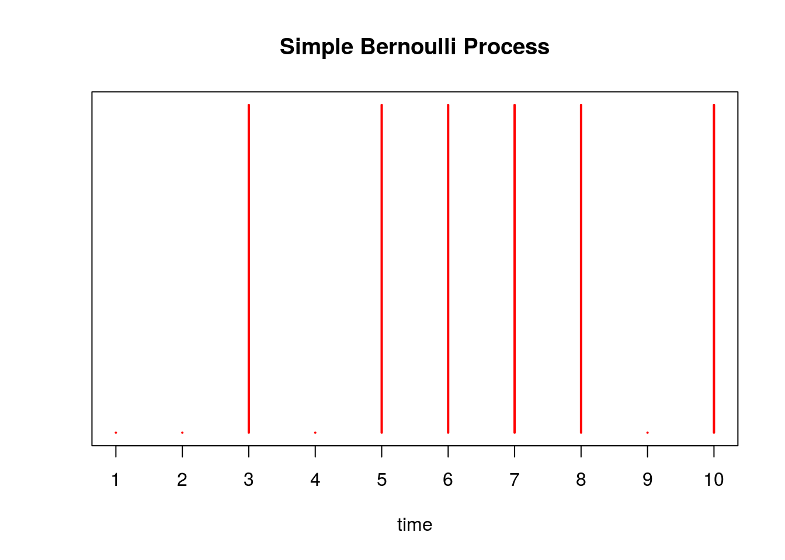
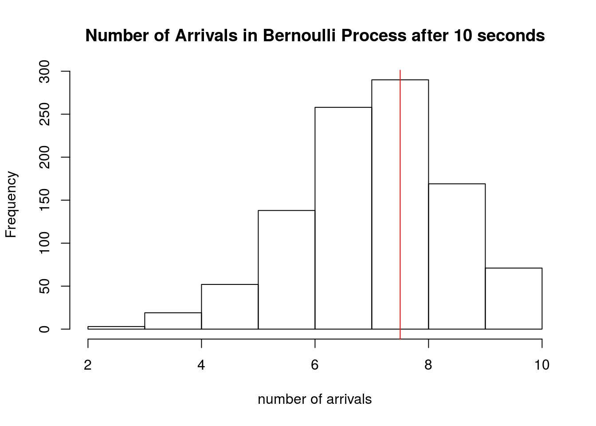
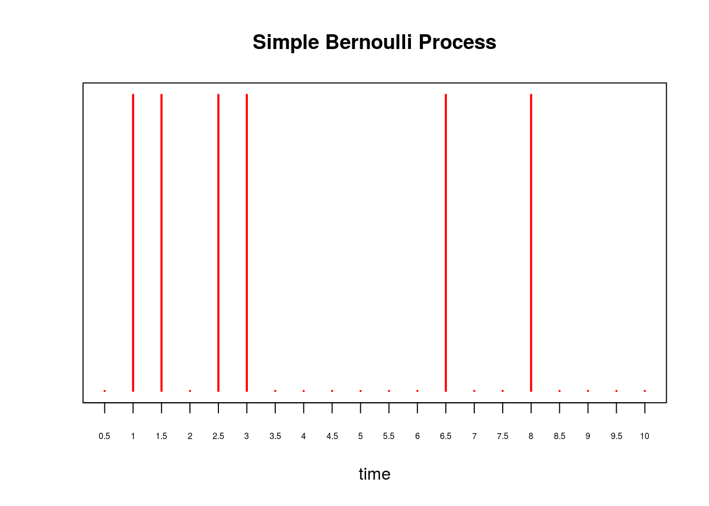
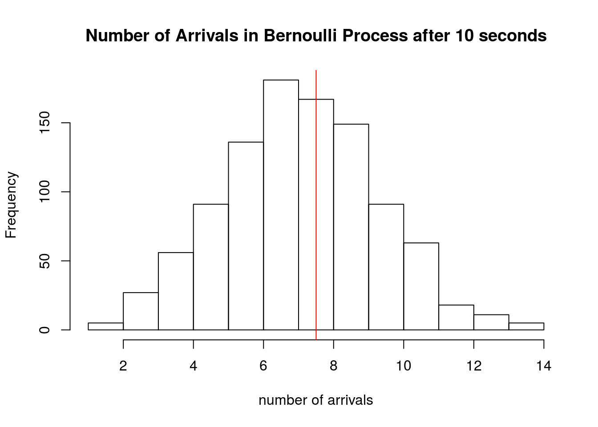

Poisson Process: The Limiting Case of the Bernoulli Process
Matt Bonakdarpour
2016-02-05
Last updated: 2017-03-06
Code version: c7339fc # Pre-requisites
This document assumes basic familiarity with the Poisson process.
Overview
To gain intuition about the Poisson process, it is useful think of it as a continuous time version of the Bernoulli process. We first review some basics about the Poisson process and settle on notation before moving on to an illustrative example.
For a Poisson process, arrivals may occur at any arbitrary time \(t \geq 0\). One way to specify a Poisson process is by the counting process \(N_t\) denoting the number of arrivals up to and including time \(t\). For a Poisson process with rate parameters \(\lambda\), we have that \[N_t \sim \text{Poisson}(\lambda t)\]
Therefore, the expected number of time arrivals up to and including \(t\) is equal to \(E[N_t] = \lambda t\). In the examples that follow, we will assume our rate parameter \(\lambda\) is \(0.75\) arrivals per second, and we are interested in the number of arrivals after 10 seconds, \(N_{10}\). In this example, we expect and average of \(10\times\lambda = 7.5\) arrivals after \(10\) seconds.
Now we will describe the discrete-time analog of the Poisson process, the Bernoulli process. Throughout the next section, our aim is to construct a Bernoulli process so that the expected number of arrivals after \(10\) seconds matches the Poisson process above. We will then investigate what happens to the Bernoulli process as we increase the number of discrete events within the \(10\) seconds while maintaining the expected number of arrivals at \(7.5\).
Bernoulli Process
The Bernoulli process is a sequence of independent random variables \(X_1,X_2,X_3,\ldots\) where \(X_i\) is \(1\) with probability \(p\) and \(0\) with probability \(1-p\). This is the mathematical abstraction of coin tossing.
Assume that we perform a Bernoulli trial every second for 10 seconds. We will think of each \(X_i=1\) as an arrival. Recall that since our random variables \(X_i\) are Bernoulli(\(p\)), the sum \(S_{10} = \sum_{i=1}^{10} X_i\) is Binomial(10, \(p\)). The expected value of \(S_{10}\) is therefore \(10p\) arrivals in \(10\) seconds. To match the Poisson process above, we set \(p=0.75\) so that \(E[S_{10}] = 7.5\).
Below we simulate this process with \(p=0.75\), drawing a red line at time point \(i\) if \(X_i = 1\):
X = rbinom(10, 1, 0.75)
plot(X, xaxt='n', yaxt='n', type='h', ylim=c(0,1),
col='red', lwd=2, ylab='', xlab='time', main='Simple Bernoulli Process')
axis(1, at = 1:10, labels=as.character(1:10))
There are \(\sum_{i=1}^{10} X_i =\) 6 arrivals in our experiment above. We simulate this Bernoulli process 1000 times below, and a plot a histogram of the \(S_{10}\)’s obtained from each trial. We draw a red line at the expected number of arrivals, 7.5.
hist(sapply(1:1000, function(x) sum(rbinom(10,1,0.75))), xlab='number of arrivals', main='Number of Arrivals in Bernoulli Process after 10 seconds')
abline(v=7.5, col='red')
Note that for this process, time is discrete – events only happen at the integers \(1,2,\ldots 10\), while the Poisson process models events happening at any time \(t \in [0,10]\). We could next think of performing a Bernoulli trial more rapidly, like every 0.5 seconds, or every 0.01 seconds, and so on. Continuing in this fashion, we would eventually (in the limit) have a continuous time process where arrivals could happen at any moment in time. We will now investigate what happens as we “shrink” the Bernoulli process in this way, allowing for more trials within the \(10\) seconds.
Instead of performing a Bernoulli trial at every second, assume we perform one at every \(\delta\) seconds where, in this example, \(\delta < 1\). This would make the total of trials \(n = \frac{10}{\delta}\). Without making any other changes, \(S_{10}\) would be a Binomial(\(10 /\delta\), \(0.75\)) random variable with the expected number of arrivals equal to: \[E[S_{10}] = \frac{p\times 10}{\delta} = \frac{0.75\times 10}{\delta}\]
To maintain the average of \(7.5\) arrivals in \(10\) second, we would need to shrink the probability so that \[\begin{align*} E[N_{10}] &= E[S_{10}] \\ 10 \lambda &= \frac{10\times p}{\delta} \\ \Rightarrow p &= \lambda \delta \\ &= 0.75\delta \end{align*}\]
where we substituted \(\lambda = 0.75\) in the last line. Continuing our example, instead of every 1 second, supposed we perform a Bernoulli trial every \(\delta = 0.5\) seconds for \(10\) seconds. Then, to maintain the expected number of arrivals, we set \(p = 0.75\times 0.5 = 0.375\). We plot this process below:
X = rbinom(20, 1, 0.375)
plot(X, xaxt='n', yaxt='n', type='h', ylim=c(0,1),
col='red', lwd=2, ylab='', xlab='time', main='Simple Bernoulli Process')
axis(1, at = 0:20, labels=as.character(seq(0, 10, by=0.5)), cex.axis=0.5)
and show the histogram of 1000 simulations of \(S_{10}\) for this process:
hist(sapply(1:1000, function(x) sum(rbinom(20,1,0.375))), xlab='number of arrivals', main='Number of Arrivals in Bernoulli Process after 10 seconds')
abline(v=7.5, col='red')
Discrete to Continuous
In the previous section we saw that as we perform more Bernoulli trials in the same \(10\) seconds (i.e. a trial every \(\delta = 0.5\) seconds), we had to decrease the success probability \(p\) to maintain \(E[S_t] = E[N_t]\), where \(N_t\) was the number of arrivals from the Poisson process from the first section of this note.
The key result is this: as \(\delta \rightarrow 0\), we have that the \(P(S_t = k) = P(N_t = k)\) and, in this sense, the Bernoulli process converges to the Poisson process. We illustrate this in the plots below. Recall that \(N_t \sim \text{Poisson}(\lambda t)\).
As we set \(\delta\) to smaller and smaller values, in each plot we show a histogram of 5000 simulated \(S_{10}\)’s along with the Poisson density of \(N_{10}\). We see that as \(\delta\) gets smaller, the histogram converges to the Poisson density.
In the simulation above, we perform Bernoulli trials every \(\delta = 2^{-j}\) seconds for increasing values of \(j\). This characterizes how fast we “shrink” the Bernoulli process.
TOTAL.TIME <- 10
lambda <- 0.75 # poisson rate paramter
shrink.vec <- 0:10
bern.process <- vector("list", length(shrink.vec))
for(idx in seq_along(shrink.vec)) {
j <- shrink.vec[idx]
p <- lambda*2^(-j) # bernoulli parameter
time <- seq(0, TOTAL.TIME, by=2^(-j)) # time steps
bern.process[[idx]] <- sapply(1:5000, function(x) rbinom(length(time), 1, p))
}
# compare Bernoulli histogram to Poisson density
compare.density <- function(b.process, delta, inspect.at=10) {
num.row <- dim(b.process)[1]
# compute bernoulli counts
tt <- table(apply(b.process, 2, cumsum)[num.row,])
# compute poisson density
pois.density <- dpois(0:80, inspect.at*lambda)
# plot
plot(tt/sum(tt), main=paste("trial every", round(delta,4), "seconds"), xlab='number of arrivals after 10 seconds', ylab='density', xlim=c(0,15), ylim=range(c(tt/sum(tt), pois.density)))
lines(0:80,pois.density, 'b')
}
par(mfrow=c(2,2))
compare.density(bern.process[[1]], 2^(-shrink.vec[1]))
compare.density(bern.process[[2]], 2^(-shrink.vec[2]))
compare.density(bern.process[[3]], 2^(-shrink.vec[3]))
compare.density(bern.process[[11]], 2^(-shrink.vec[11]))
Session information
sessionInfo()R version 3.3.2 (2016-10-31)
Platform: x86_64-pc-linux-gnu (64-bit)
Running under: Ubuntu 14.04.5 LTS
locale:
[1] LC_CTYPE=en_US.UTF-8 LC_NUMERIC=C
[3] LC_TIME=en_US.UTF-8 LC_COLLATE=en_US.UTF-8
[5] LC_MONETARY=en_US.UTF-8 LC_MESSAGES=en_US.UTF-8
[7] LC_PAPER=en_US.UTF-8 LC_NAME=C
[9] LC_ADDRESS=C LC_TELEPHONE=C
[11] LC_MEASUREMENT=en_US.UTF-8 LC_IDENTIFICATION=C
attached base packages:
[1] stats graphics grDevices utils datasets methods base
other attached packages:
[1] workflowr_0.4.0 rmarkdown_1.3.9004
loaded via a namespace (and not attached):
[1] backports_1.0.5 magrittr_1.5 rprojroot_1.2 htmltools_0.3.5
[5] tools_3.3.2 yaml_2.1.14 Rcpp_0.12.9 stringi_1.1.2
[9] knitr_1.15.1 git2r_0.18.0 stringr_1.2.0 digest_0.6.12
[13] evaluate_0.10 This site was created with R Markdown